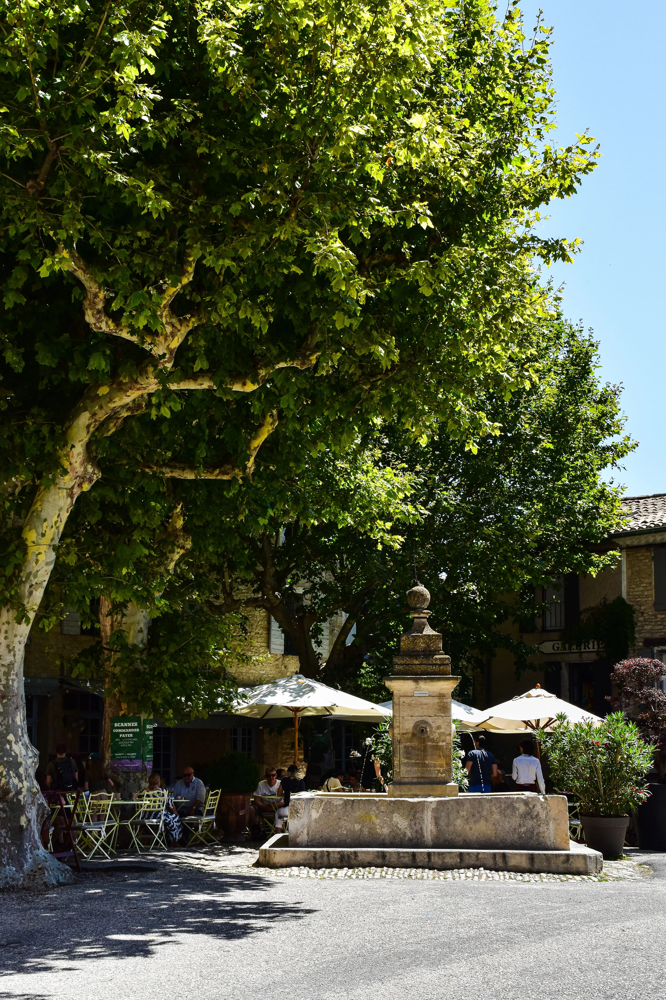
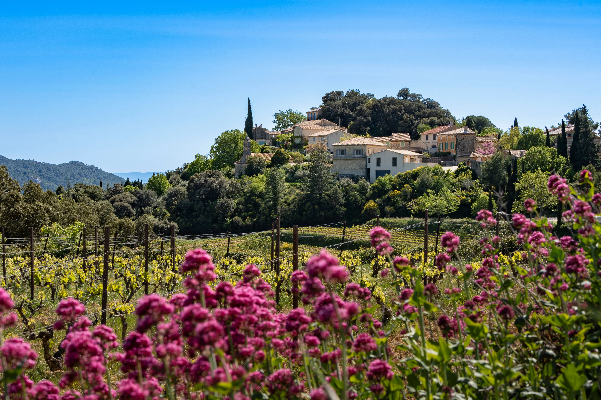

Abbaye de Sénanque
Fondée au XIIe siècle, cette abbaye cistercienne est l'un des sites les plus emblématiques de Provence, célèbre pour ses champs de lavande.
Le Luberon et le Vaucluse regorgent de monuments, villages historiques et lieux emblématiques témoignant de plusieurs siècles d'histoire provençale.

Fondée au XIIe siècle, cette abbaye cistercienne est l'un des sites les plus emblématiques de Provence, célèbre pour ses champs de lavande.

Un remarquable ensemble de constructions en pierre sèche témoignant de l'architecture rurale traditionnelle du Luberon.

Premier château Renaissance de Provence, il constitue un joyau architectural au cœur du Luberon.

Village historique perché ayant inspiré de nombreux artistes, écrivains et amoureux de la Provence.

Son patrimoine religieux, ses ruelles anciennes et ses panoramas en font une étape incontournable du Luberon.

Lieu emblématique associé au poète Pétrarque, mêlant patrimoine culturel et richesse naturelle.